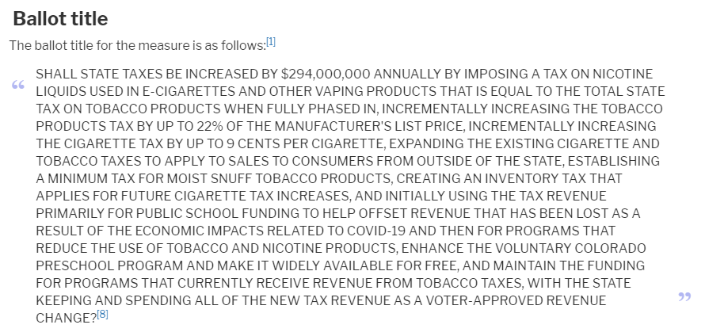
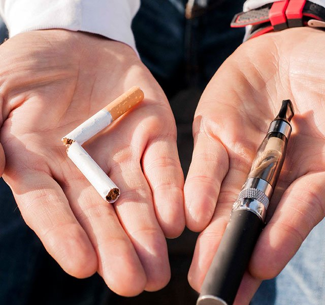

This is propositon EE
Proposition EE simplefied
In simple words what the ballot measure basically accomplishes is it enables the government to tax e-cigarette products like vape pens and others similar to how tobacco products are being charged right now. And the government can increase the tax on nicotine products even more. Furthermore these funds would be distributed to other essential services like health care.

The changes the measure would cause if passed
Currently, in Colorado, tobacco products (cigars and tobacco designed to be chewed or smoked in a pipe) are taxed at a statutory rate of 20% of the manufacturer's list price (MLP) and a constitutional rate of 20% of the MLP for a total rate of 40% of the MLP. The measure would incrementally raise the statutory tax rate by 22 percentage points by July 2027 for a new total state-levied tobacco products tax rate of 62% of the MLP.
Currently, in Colorado, nicotine products such as e-cigarettes are not taxed. The ballot measure would create a tax on nicotine products that would match the tobacco products tax rates. The rate would begin at 30% of the MLP in 2021 and would increase gradually to 62% of MLP by July 2027.
Impact of the ballot
Financial impact
Proposition EE will increase state revenue from cigarette, tobacco product, and nicotine product taxes by $87 million in state budget year 2020-21 and $176 million in state budget year 2021-22, the first full year under the measure. The amount of new revenue will increase as the measure is phased in, with $276 million expected to be generated in state budget year 2027-28. In addition, the measure will also increase state revenue from sales taxes by $0.8 million in state budget year 2020-21 and by $1.5 million in state budget year 2021-22, the first full year under the measure. The amount of additional sales tax revenue will decline as the measure is phased in, with no new sales tax revenue expected in state budget year 2027-28.
How taxpayers are impacted
Although this measure is going to increase taxes on tobbaco product this change only effects the taxpayers that smoke nicotin based product.Therefore the rest of the taxpayers are unaffected from these changes. Only around 14.9 percent of people consume nicotin based product and if this remains constant this measure would increase the taxes paid by cigarette smokers by an average of $222 in state budget year 2021-22 and by $291 in state budget year 2027-28.